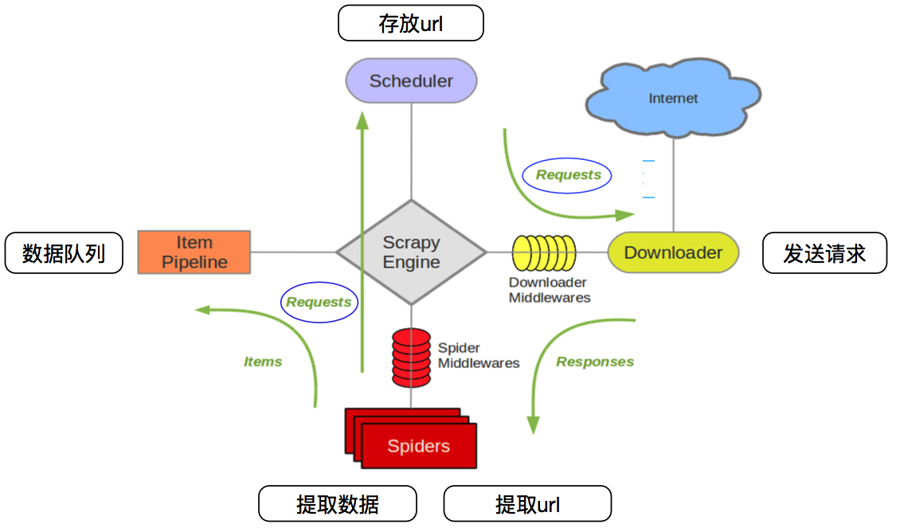
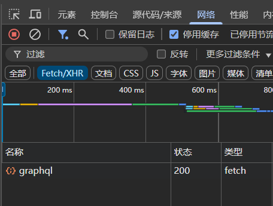
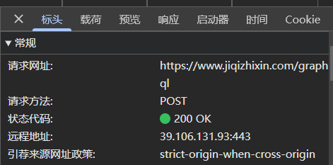
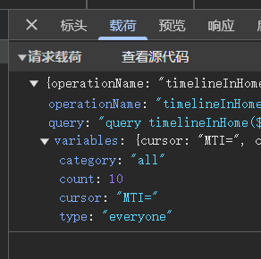

1. 总论
基本要素
URL：统一资源定位符
Uniform Resource Locator（URL），即统一资源定位符，互联网上用它来标识某个资源的地址
常见的URL组成为：
协议（Protocol）：例如
http或https，指定了访问资源的方式主机（Domain Name）：
主机=服务器名+域名，例如www.example.com，是网站的地址。其中www是一个子域名，但也常常称作服务器名；example.com为域名端口（Port）：可选，如果使用非标准端口，需要指定
路径（Path）：指定资源在服务器上的具体位置，例如
/path/to/resource。如果不写则默认进入域名的 index 网页查询字符串（Query String）：可选，用于传递参数，通常以
?开始，后面跟着参数列表锚点（Fragment）：可选，用于指向资源内部的特定部分
一个URL的例子为：https://www.example.com/path/to/resource?name=value#section
http默认端口号是80，https是443
www
在URL中，"www"是一个常见的子域名，它代表"World Wide Web"（万维网）。万维网是互联网上的一种信息空间，用户可以通过浏览器访问网页，网页之间通过超链接相互连接
"www"通常用于指向一个网站的主服务器或主页，也就是主机名。主机名常用来区分不同服务器，如：
www.example.com：可能指向提供网页内容的服务器。mail.example.com：可能指向提供电子邮件服务的服务器。ftp.example.com：可能指向提供文件传输服务的服务器。
目前许多网站开始直接使用裸域名（即没有"www"前缀的域名）作为其主要访问地址，例如直接使用http://example.com而不是http://www.example.com。这主要是出于简化URL和提高搜索引擎优化（SEO）的考虑
Headers
标头，分为请求头和响应头，默认指前者。标头是HTTP协议中的一部分，用于在客户端和服务器之间传递附加信息。这些头部字段提供了关于请求、客户端环境、或请求的上下文的信息
常见请求头：
User-Agent：即用户代理（UA），指明了用户是通过什么浏览器来发起请求的，是最基本的请求参数，使用爬虫时基本都需要带，且也需要定期更新
Referer：判断当前路径是不是由上一个路径进来的，一般用作防盗链，比如你不是通过登录页面而来的，就不给数据。有的网站验证referer，有的不验证。网页服务器仅确认域名而不确认路径，只要域名正确即使路径不存在同样放行
Content-Type：用于指定载荷数据的格式，如
application/json、multipart/form-data等，一些 AJAX 请求可能需要携带Cookie：在请求头中包含信息最多、最核心的参数。cookie存储了和用户有关的几乎所有信息，获取到cookie后可直接进入大部分网页
爬虫
爬虫核心
爬取网页：爬取整个网页，包含网页所有内容
解析数据：将网页中你得到的数据进行解析
爬虫和反爬虫之间的博弈
爬虫的用途
数据分析/人工数据集
社交软件冷启动
舆情分析
竞争对手监控
爬虫分类
通用爬虫
像谷歌、百度之类的搜索引擎，它们爬取所有网页，并整理后提供检索服务
抓取的数据大多是无用的，不能根据用户的需求来精准获取数据
聚焦爬虫
根据需求，实现爬虫程序，抓取所需的数据
设计思路：
确定要爬取的url
模拟浏览器通过http协议访问url
获取服务器返回的html代码
解析html字符串
反爬手段及解决
UA识别
User-Agent，中文名为用户代理，简称UA，是一个特殊字符串头，使得服务器能够识别用户的操作系统及版本、CPU类型、浏览器版本、浏览器渲染引擎等
如果不设置 UA，一般服务器就会认定这个请求的发起者是非浏览器，就不会返回数据
次数封禁
当某个 IP 短时间内发出大量请求，服务器可能会处于负载的考虑暂时将该 IP 发出的请求进行封禁，不返回任何数据。这时可隔一段时间再爬取，或使用代理 IP
降低抓取速度。比如每两次请求之间间隔2秒，即设置time.sleep(2)。这样 2 秒请求一次，这是人手动也可以操作出来的，网站就不敢确定你是一个爬虫程序，只有同一个个 ip 1秒请求很多次，网站才会直接判断你是爬虫。有时设置随机 sleep 时间，防止网站识别出你访问时间太过均匀
但降低抓取速度就意味着牺牲了时间
代理 IP 的分类：
透明代理：对方服务器可知道你使用代理，且知道你的真实IP
匿名代理：服务器知道你使用代理，但不知道真实IP
高匿名代理：服务器不知道使用代理，更不知道真实IP
代理的常用功能：
突破自身 IP 访问限制，访问国外站点
访问有些单位或团体内部资源（比如大学文献库）
提高访问速度：通常代理服务器都设置一个较大的硬盘缓冲区，当外界有信息通过时，同时也将其保存到缓冲区中。当有其它用户再访问相同信息时，则直接从缓冲区中取出信息发送给用户，提高访问速度
隐藏真实IP，防止受到攻击
可使用代理 IP，频繁变化IP地址，这样服务器就不会因为大量的请求而封禁 IP
动态加载网页
网站返回的是 js 数据，并不是网站真实的数据。并且会随着用户的滑动动态加载网页数据，如果直接爬取会得不到完整数据
可使用 selenium 驱动真实的浏览器发起请求，或对标头进行解析，找到真正的请求API并发起请求
数据加密
需要分析返回的 js 代码进行解密
验证码
依靠打码平台解决网站需要输入验证码的问题
懒加载
一些涉及图片多的网站，一般都会使用名为懒加载的技术，在一开始加载页面时不全部将网页中的全部图片一次性加载出来，而是随着用户的滑动逐步加载
例如一个懒加载页面，未加载出来的图片是src2而不是src，而当你往下滑的时候，当加载了这张图片时，他的src2就会自动转变为src。这样的话按原来的代码就会报错。解决办法就是直接将src写成src2
严格来说懒加载并不是为了反爬而出现的，但其效果可反爬
特殊HTML标签
例如 tbody 本身是HTML的表格标签，但若将该标签加入元素解析路径中则查找不到元素。这也可能是xpath的一个bug
JS逆向
对于动态加载网页，有两种方法：
用selenium等真实浏览器驱动爬取网页元素。虽然能适用几乎所有场景，但效率低下且需要一直运行浏览器和加载没必要的网页，开销较大
使用js逆向破解网站设置的各种反爬和加密，获得真实目标接口。该方法比较敏感，难度较高，需要不断发现-推断-尝试才能得到结果
JavaScript：一种函数优先的轻量级、解释型或即时编译型的脚本编程语言。广泛应用于web开发，长用来给网页添加各式各样的动态功能。在网页中，js脚本可嵌入在HTML中来实现自身功能，也可单独写成js文件。js可以在浏览器中直接执行
JS逆向的主要工作：
代码反混淆：许多js代码都是经过混淆的（加密），难以理解和修改。通过反混淆工具，还原js的代码，理解其原始意图
调试：通过调试工具，可以了解js代码的行为。在调试过程中，可以设置断点，单步执行代码，并监视变量的值。通过调试，可以理解代码内部的工作原理，找到其漏洞
注入：通过注入js代码，可以修改页面的行为，利用js执行各种任务
修改：通过修改js代码，以改变其行为（如绕过安全机制、隐藏恶意行为等）
方法：可在js文件里打上断点，逐步运行，一步步调试，重现js实现网页异步加载的过程，方便分析
断点：在源代码板块找到js文件（可能有多个，注意区分），点击某一行的行号即可打上断点
可在“网络”面板中的js文件中找到js，右键“在来源面板中打开”，即可打开源代码
2. 爬虫库
解析网页元素：xpath
使用解析来获取想要的数据，比如网页中的某一个特定的栏目。可使用正则表达式进行匹配，也可以直接使用第三方库来简化这一步骤，常见的网页解析库有：lxml、jsonpath、beautifulsoup
xpath
XPath（XML Path Language）是一种用于在XML文档中进行查询的语言。它允许你快速地定位XML文档中的元素和属性
在XPath中，XML文档被视为一个由节点组成的树结构。节点可以是元素、属性、文本、命名空间等。
Chrome浏览器有一个插件就叫xpath，安装后可使用 xpath 路径获得网页中指定元素。对于感兴趣的元素，可以坐标右键它，然后选择复制-复制xpath路径，然后再做查询
使用快捷键
ctrl+shift+x打开和关闭xpath快捷窗口Python lxml 包也有xpath方法，通过xpath路径可提取网页中的指定内容
pip install lxml
xpath使用
xpath 可用于解析本地网页和服务器响应的网页
1from lxml import etree2# 解析本地文件，使用etree.parse()方法3tree=etree.parse('xx.html')4# 解析服务器响应文件，使用etree.HTML()方法5tree2=etree.HTML(response.read().decode('utf-8'))xpath 基本语法
路径查询
//查找所有子孙节点，不考虑层级关系/找直接子节点
谓词查询
//div[@id]：查找所有带有 id 属性的 div 标签//div[@id="maincontent"]：查找所有id名为maincontent的div标签
属性查询
//@class：查找所有带有class属性的标签模糊查询
//div[contains(@id, "xx")]：查找所有id中带有xx的div标签//div[starts-with(@id, "xx")]：查找所有id以xx开头的div标签
内容查询
//div/h1/text()：查找 h1 标签下的文本内容逻辑运算
//div[@id="head" and @class="s_down"]：查找id为head并且class为s_down的div标签//title | //price：查找所有title和price标签
其中模糊查询和逻辑运算用的不多，其他都非常重要，能熟练使用xpath和lxml，就可以很轻松地获取网页中想要的数据，比正则表达式方便许多
xpath使用步骤
确定网页位置、网页中想要获取元素的 xpath 路径
元素路径可右键-检查来寻找并手动写xpath，也可以使用xpath插件直接复制xpath路径。不过有的时候复制的xpath并不能精准定位到需要的元素（比如多个元素重叠到了一块），仍然需要检查
通过
tree.xpath('xpath路径')来提取元素提取到的每一条数据都作为一个元素，并以列表的形式返回。若没有元素则返回空列表
例子：从百度网页中获取“百度一下”四个字
x1import urllib.request2
3url = 'https://www.baidu.com'4headers = {'User-Agent':'Mozilla/5.0(WindowsNT10.0;Win64;x64)AppleWebKit/537.36(KHTML,likeGecko)Chrome/100.0.4896.75Safari/537.36'}5request = urllib.request.Request(url=url,headers=headers)6response = urllib.request.urlopen(request)7content = response.read().decode()8# 解析网页源码，来获取我们想要的数据，利用lxml库9from lxml import etree10# 解析服务器响应文件，用HTML方法11tree=etree.HTML(content)12# 找到所要文件的位置，利用网页中的xpath插件，验证是否正确，然后将插件左边框的语句复制到下方的路径中13result=tree.xpath('//input[@id="su"]/@value')14print(result)常见问题
在有多个引号的情况下，单引号和双引号需要交替使用，如
"inc'ss'dsd"，而不能"inc"ss"dsd"网页中标签的 id 是唯一的
查看网页编码格式：检查网页源代码-head-charest参数
直接定位到图片的标签，然后右键-复制-复制xpath即可，不过后边一般要加/@xxx，将图片和名字，即src和alt区分开来，分别存储。如果没有等号的话，获取网页的文本，就加/text()，如果想获得特定标签的值的话，就用/@
urllib 库
urllib 是 Python 的一个标准库，主要用于处理与网络相关的功能，尤其是用于打开和读取 URL 指向的资源。它提供了丰富的功能来处理HTTP、HTTPS、FTP等协议的请求
主要模块
urllib.request
这是urllib库的核心模块之一。它提供了用于打开和读取URL的功能。可以用来发送HTTP请求，获取网页内容、下载文件等。例如，通过
urllib.request.urlopen()函数可以打开一个URL，返回一个类似文件的对象，然后可以使用read()方法读取内容
urllib.parse
主要用于解析URL，即发送带有参数的POST请求。它可以将URL分解成不同的组成部分，如协议（scheme）、主机名（hostname）、端口号（port）、路径（path）、查询参数（query）等。这对于处理复杂的URL和构建新的URL非常有帮助。例如，使用
urllib.parse.urlparse()函数可以解析一个URL
urllib.error
包含了urllib.request模块可能引发的异常类。在进行网络请求时，可能会遇到各种错误，如连接错误、HTTP错误等。这个模块定义了相应的异常类，如
URLError是所有异常的基类，HTTPError是URLError的子类，专门用于处理HTTP错误
urllib.robotparser
用于解析网站的robots.txt文件。robots.txt文件是网站用来告诉搜索引擎哪些页面可以抓取，哪些页面不能抓取的规则文件。通过这个模块，可以判断我们的爬虫程序是否有权限访问网站的某些页面
使用方法
241# GET请求2import urllib.request # 导入urllib.request3
4response = urllib.request.urlopen('https://www.example.com')5content = response.read().decode('utf-8') # read是按字节形式读取二进制流，decode将返回的字节流解码成字符串6print(content)7
8# POST请求9import urllib.parse10
11url = 'https://www.example.com/login'12data = {'username': 'user1', 'password': 'pwd123'}13data = urllib.parse.urlencode(data).encode('utf-8')14response = urllib.request.urlopen(url, data=data)15content = response.read().decode('utf-8')16print(content)17
18# 下载资源19import urllib.request20
21url = 'https://example.com/image.jpg'22# 其中第一个参数是url，第二个参数是文件名（要加拓展名），可请求网页、图片、视频23filename = urllib.request.urlretrieve(url,'xxx.jpg')24print('下载文件保存路径：', filename)大部分网站的请求信息中需要请求头，否则将判定为非浏览器请求而拒绝。urlopen方法中不能存储字典，所以headers不能传递过去，可通过以下方式定制请求头：
91import urllib.request2url = 'https://www.baidu.com'3# 用户代理可以用字典来存储它4headers = {'User-Agent':'Mozilla/5.0(WindowsNT10.0;Win64;x64)AppleWebKit/537.36(KHTML,likeGecko)Chrome/99.0.4844.82Safari/537.36'}5# 请求方法的定制6request = urllib.request.Request(url=url,headers=headers) # 这里的传递参数，要传递关键字参数，不然会报错，因为第二个参数并不是headers，而是data，或者在这两个参数之间加个None也可以7response = urllib.request.urlopen(request)8content = response.read().decode('utf-8')9print(content)Handler处理器与代理池
Handler可以定制比urllib.request.Request更高级的请求头，比如使用代理
代理池：一个强大的爬虫批，肯定会有一个代理池，里面有许多高匿IP，在爬取网站的时候就不用担心被封IP了
151# headler 基本使用2import urllib.request3
4url=''5headers={}6request=urllib.request.Request(url,None,headers)7#(1)获取handler对象8handler=urllib.request.HTTPHandler()9#(2)获取opener对象10opener=urllib.request.build_opener(handler)11#(3)调用open方法，这一步很像urlopen12response=opener.open(request)13
14content=response.read().decode('utf-8')15print(content)
requests 库
requests是一个Python第三方库，用于发送HTTP请求，比Python标准库中的urllib更加简洁、易用和功能强大
通过pip install requests安装
GET请求
41import requests2url='https://www.baidu.com'3r=requests.get(url)4print(r.text) # 返回字符串类型的网页源码.get()有多个参数，其中比较重要的是：url、params、headers
params：参数，用于存储请求参数，是一个字典。params中的参数最终会和url拼接到一起
headers：请求头，是一个字典
其余response的常用函数：
r.url：获取请求的url.json()：直接打印网页的 json 数据r.content：返回的是二进制的源码，因为是二进制，在后边可以跟.decode()加上对应的编码格式来解码就形式而言，是一堆字典键值对和十六进制东西，需要在后面加上网站编码格式，如.decode('utf-8')
r.status_code：响应的状态码r.headers：响应头信息
81import requests2
3url='https://www.baidu.com/s?'4headers={'User-Agent':'Mozilla/5.0(WindowsNT10.0;Win64;x64)AppleWebKit/537.36(KHTML,likeGecko)Chrome/100.0.4896.75Safari/537.36'}5data={'wd':'北京'}6response=requests.get(url,params=data,headers=headers)7text=response.content.decode('utf-8')8print(text)注意：如果网页后边有参数的话，网页后边要跟/s，而参数之间的连接符?可写可不写
requests没有像urlretrieve那样简单的方法直接下载文件，需要手动将返回的信息写入文件中，下面以 .jpg 图片为例
31# 假设前面已经获取了图片的数据content2with open('名字.jpg','wb') as f:3 f.write(content)图片一般是用二进制，所以用 wb 方式
而大文件，那么先下载下来的文件先放到内存中，内存压力比较大，所以为了防止内存不够，要将下载下来的文件 分块写入磁盘
POST请求
requests.post()，参数有：url、data、kwargs、headers等，建议使用关键字参数避免出错。其中的data就是我们我们需要的请求参数，和get方法的parmas是一样的
post请求方法可以向服务器上传文件，只需把文件打开（必须使用rb，即二进制读取），然后再post方法中加入参数即可
代理
使用的基本形式如下：
31proxy={'http':'代理',2 'ip'：'端口号'}3requests.get(url=url,proxies=proxy)Session
session 意为“会话”，在诸如 requests、flask、django 等库中均存在，且作用都为管理会话
在 requests 库中，session 的功能和特点为：
可以在多个请求之间保持某些参数（如 Cookies、Headers）
自动处理 Cookie，方便模拟登录或访问需要认证的资源
支持连接池，提高请求效率
示例代码：
181import requests2
3# 创建一个 Session 对象4session = requests.Session()5
6# 使用 Session 发送 GET 请求7response = session.get('https://example.com')8
9# 使用 Session 发送 POST 请求10payload = {'key1': 'value1', 'key2': 'value2'}11response = session.post('https://example.com', data=payload)12
13# 使用代理14proxies = {"http": "http://10.10.1.10:3128", "https": "http://10.10.1.10:1080"}15resp = self.session.post(..., proxies=proxies)16
17# 关闭 Session18session.close()
项目：爬取某图片网站
351import requests2import socket3from lxml import etree4import os5
6headers = {'User-Agent':'Mozilla/5.0 (Windows NT 10.0; Win64; x64) AppleWebKit/537.36 (KHTML, like Gecko) Chrome/100.0.4896.75 Safari/537.36'}7socket.setdefaulttimeout(30)8urle = 'https://m.shzx.org/a/162-4645-'9
10while True:11 n = 112 for y in range(40):13 url = urle+str(y)+'.html'14 response = requests.get(url=url,headers=headers)15 content = response.content.decode('utf-8')16 tree = etree.HTML(content)17 photoList = tree.xpath('/html/body/div[3]//img/@src')18 #文件夹名19 fileName = tree.xpath('/html/body/div[3]/h1/text()')[0]20 if os.path.exists('./xy/{}'.format(fileName)):21 pass22 else:23 os.mkdir('./xy/{}'.format(fileName))24 for i in range(len(photoList)):25 name = './xy/{}/{}.jpg'.format(fileName,n)26 response2 = requests.get(url=photoList[i],headers=headers,verify=False)27 content2 = response2.content28 try:29 with open(name,'wb') as f:30 f.write(content2)31 print(fileName,'->',n,'->','下载完成')32 n += 133 except:34 print('跳过这一张')35 urle = 'https://m.shzx.org/'+(tree.xpath('/html/body/div[5]/li[1]/a/@href')[0]).strip('0.html')
selenium
selenium 是一个用于 web 应用程序测试的工具，直接运行在浏览器中，就像真正的用户在操作一样，常常被用于自动化
对于具有严格反爬手段的网站，可使用selenium驱动真实浏览器进行爬虫
特点
模拟浏览器功能，自动执行网页 js 代码，能实现动态加载
支持通过各种driver驱动真实浏览器完成测试
支持无界面浏览器操作
速度比一般的爬虫要慢
下载
selenium为 Python 第三方库，可用下列命令下载：pip install selenium
此外，要使用这个工具驱动浏览器访问网页，还需要下载对应浏览器驱动，以chrome为例，驱动下载地址为：https://chromedriver.storage.googleapis.com/index.html。在此之前需要查看chrome的版本，下载比自己版本同级或者更低的驱动，win32版本就行。然后将下载的压缩包解压，将解压完成的一个.exe文件放在python文件所在位置，不需要安装，也不需要运行
基本使用
131from selenium import webdriver2
3# 创建浏览器操作对象4path = '驱动文件路径'5browser = webdriver.Chrome(path)6
7# 访问网址8url = '网址'9browser.get(url)10browser.back() # 返回上一界面11
12webdriver.quit() #退出相关驱动程序,并关闭所有窗口13webdriver.close() #关闭当前一个窗口如果浏览器没有安装在默认位置，就需要配置环境变量及代码指定浏览器位置
元素定位
自动化要做的就是模拟鼠标和键盘来操作这些元素，点击输入等，故操作之前首先要找到他们，而webdriver提供了很多定位元素的方法
61button=browser.find_element_by_id('su')2name=browser.find_element_by_name('wd')3xpath1=browser.find_element_by_xpath('//input[@id="su"]')4names=browser.find_elements_by_tag_name('input')5my_input=browser.find_elements_by_css_selector('#kw')[0]6browser.find_element_by_link_text('新闻')注意：
在找元素时，有些网页可能是动态加载或者延迟加载，即网页元素还没加载出来就已经开始定位了，这样是肯定定位不到元素的，可以在打开网页后先sleep一会儿再进行定位
找元素时，find_elements 和 find_element 是不一样的，后者如果有多个结果只会返回第一个结果
使用以上方法时，可能会提示方法已过时，可导入warnings，并且忽略过时的检查
鼠标动作链
61from selenium.webdriver import ActionChains2
3ActionChains(browser).move_to_element(element).perform()4# element表示网页中的一个元素，注意并不是某个元素某个属性的值，表示移动到某个元素所在的位置5ActionChains(browser).move_to_element(ac).click(ac).perform()6# ac表示一个元素，表示点击某个元素（左键）无界面浏览器
不需要进行 css 和 gui 渲染，其速度要比真实浏览器以及原生selenium快很多。phantomjs 和 handless 就是两个典型的无界面浏览器，他们均基于selenium
项目
使用selenium爬取sciencedirect。对于指定分类下的所有文章，如果文章中含有Author statement部分，则获取这一部分的文本
361from selenium import webdriver2import warnings3import time4
5f = open('hx.txt','a',encoding='utf-8')6warnings.filterwarnings('ignore',category=DeprecationWarning)7path = 'chromedriver.exe'8driver = webdriver.Chrome(path)9# 爬取31-58页的数据10for x in range(40,59):11 url = 'https://www.sciencedirect.com/journal/journal-of-english-for-academic-purposes/vol/{}/suppl/C'.format(str(x))12 driver.get(url)13 xpath1 = driver.find_elements_by_xpath('//ol/li/dl/dt/h3/a')14 src_list = []15 # 获取每卷的文章链接并将链接写入列表16 for item in xpath1:17 src = item.get_attribute('href')18 src_list.append(src)19 # 打开每篇文章20 for src in src_list:21 driver.get(src)22 time.sleep(5.5)23 # 暴力搜索文章里是否有Author statement标题24 for i in range(80,150,5):25 xpath2 = driver.find_elements_by_id('sectitle0{:0>3}'.format(str(i)))26 for title in xpath2:27 if title.text == 'Author statement':28 # 如果有Author statement，则获取其下面的文本29 txt = driver.find_element_by_xpath('//*[@id="sectitle0{:0>3}"]/parent::*/p'.format(str(i))).text30 time.sleep(1)31 name = driver.find_element_by_xpath('//*[@id="screen-reader-main-title"]/span').text32 f.write(name+'\n'+txt+'\n'+'\n')33 print(name+'\n'+txt+'\n'+'\n')34 time.sleep(6)35f.close()36driver.quit()
scrapy 库
scrapy是一个为了爬取网站数据，提取结构性数据而编写的应用框架，可以应用在包括数据挖掘、信息处理或存储历史数据等一系列程序中，是企业级爬虫工程中用的最多的库。该框架爬取速度快，可以让我们的效率更高
结构性数据：所有网页所有的东西都是一个结构，例如：

像这种，网页的关键数据都是一行行列出来的，而在网页的元素中就表现出了这种结构性，结构性里边的元素都是高度类似的，只是某些值不一样
框架构成
引擎：自动运行，无需关注，会自动组织所有请求对象，分发给下载器
下载器：从引擎处获取到请求对象后，请求数据
spiders：Spider类定义了如何爬取某个或某些网站，包括爬取的动作（例如是否跟进链接）以及如何从网页中的内容中提取结构化数据（爬取item，可以理解为目标）。话句话说，spider就是定义爬取的动作及分析某个网页的地方
调度器：有自己的调度规则，无需关注
管道（Item pipeline）最终处理数据的管道，会预留接口供我们处理数据
另外还有两个基本（暂时）用不到的东西：
Downloader Middlewares（下载中间件）：可以自定义扩展下载功能的组件（代理、cokies等）。
Spider Middlewares（Spider中间件）：可以自定扩展和操作引擎和Spider中间通信的功能组件（比如进入Spider的Responses和从Spider出去的Requests）
当item在spider中被收集之后，它会被传递到item pipeline，一些组件会按照一定的顺序执行对item的处理。每个item pipeline组件（有时称为“item pipeline”）是实现了简单方法的python类，他们呢接收到item并通过它执行一些行为。同时也决定次item是否继续通过pipeline，或是被而不再进行处理
以下是item的一些典型应用：
清理html数据
验证爬取的数据（检查item包含某些字段）
查重（并丢弃）
将爬取的结果存储到数据库中
其典型语法为：xxx = scrapy.Field()
xxx即为赋值了数据的变量，比如：price=li.xpath('.//p[@class="price"]/span[1]/text()').extract_first()
这里的price变量存储了来自xpath路径下找到的有关图书的价格信息，通过extract_first()，price代表的是一个个价格的字符串，而item就可以处理这些字符串，xxx在这里即是price
工作原理

安装
pip install scrapy
使用流程
注意：
scrapy项目文件名不能使用数字开头，也不能使用中文
scrapy项目不是和平常的写python代码那样在pycharm中搞，而是要先通过cmd进入到想要创建项目的路径里面，然后用cmd创建项目。当然也可也在pycharm自带的终端中使用
创建项目
项目创建语法：scrapy startproject 项目名字。创建之后，在python文件夹里会出现一个新文件夹，专门用来搞爬虫的
创建后的项目组成：
__init__.py初始化文件items.py定义数据结构的文件，例如爬取的数据都包含哪些，是一个继承scrapy.item的类middlewares.py中间件，代理pipelines.py管道文件，里面只有一个类，能支持多管道同时下载，以及下载数据的后续处理，默认是300优先级，值越小优先级越高（1-1000）settings.py配置文件，比如是否遵守robots协议，UA定义等
创建文件
在这个文件夹中，我们要创建一个新的.py文件，实现爬虫的核心功能，我们所有主要代码都在这里边。而这个新文件，需要我们在cmd或者pycharm的终端中进入到spiders文件夹中，然后按如下方法创建：
文件创建语法：scrapy genspider 爬虫文件的名字（不需要后缀名） 要爬取的网页
例如：scrapy genspider baidu www.baidu.com。之后文件夹里就会出现一个叫baidu的新的py文件
运行爬虫
在文件所在的目录下运行终端：scrapy crawl 爬虫名字，比如scrapy crawl baidu
编写爬虫核心文件
创建文件后，需要进入其中编写爬取逻辑才能正常工作。而这个文件不能直接运行，只能按上述方法在终端中按命令运行
151# Baidu.py文件2import scrapy3class BaiduSpider(scrapy.Spider):4 # 爬虫的名字，用于运行爬虫的时候使用的值5 name='baidu'6 # 允许访问的域名7 allowed_domains=['www.baidu.com']8 # 起始的url地址，第一次访问的域名9 # 第二次访问的域名就是比如说第一次的爬完了，点进去下一页也是我们要爬的东西10 start_urls=['http://www.baidu.com/']11
12 # 是执行了start_urls之后执行的方法，方法中的response就是返回的那个对象13 # 相当于response=urllib.request.urlopen()，也相当于response=requests.get()14 def parse(self,response):15 passparse方法的response参数和以前获取的得到的response参数很类似，方法也差不多，估计也是通过类似get或者urlopen这种方法得到的response
response的方法有：
response.text()：得到的是响应网页源码的字符串response.body()：得到的是二进制的源码（多了个b开头）response.xpath('路径')：不再需要导入xpath，也不要使用lxml，直接就可以使用xpath方法，但是需要注意：这里的xpath返回的是一个selector对象，而不单纯是一个列表对象，因此需要需要使用下面的extract()等方法
令 span = response.xpath()：
span.extract()获取selector对象的data属性值，这个data就是我们需要的值，返回一个列表span.extract_first()提取selector列表的第一个数据，其操作等同于span.extract()[0]如果提示超出列表范围，可能是因为有的网页标签中是空值，使用try-except跳过这些空值。这个方法用的特别多，没有判断长度等问题
注意：
parse方法会提示什么签名不匹配什么的，不用管
有的时候，网页网址或者返回的数据里面包含有些特殊的字符而报错，需要去处理
编写parse函数
parse函数将对返回的response进行网页解析和进一步处理，例如，在上述的代码的类中编写parse函数：
131def parse(self,response):2 li_list=response.xpath('//ul[@id="component_59"]/li')3 #所有的selector对象都可以再次调用xpath方法4 for li in li_list:5 src=li.xpath('.//img/@data-original').extract_first()6 # 第一张图和其他图片的标签的属性是不一样的7 if src:8 src=src9 else:10 src=li.xpath('.//img/@src').extract_first()11 name=li.xpath('.//img/@alt').extract_first()12 price=li.xpath('.//p[@class="price"]/span[1]/text()').extract_first()13 print(src,name,price)robot协议
一种约定，里面有写禁止爬取的网站区域，但该约定完全可以不遵守，是一种君子协定
打开robots协议：输入网站的 URL，然后在 URL 后面添加 "/robots.txt"，如果有就会打开，如果没有就说明该网站允许爬取
例如，以下是bilibili的一部分robots.txt：
91User-agent: *2Disallow: /medialist/detail/3Disallow: /index.html4 5User-agent: Yisouspider6Allow: /7 8User-agent: Applebot9Allow: /该文件表示所有爬虫都不能访问medialist/detail以及index下的文件。Yisouspider、Applebot的爬虫可以访问所有内容
默认情况下scrapy遵守该协议，所以在使用scrapy的时候有时会出错。进入到setting.py里面，把robotstxt_obey直接改为false，或者直接注释掉，即可解决这一问题
日志
日志信息和日志级别：
CRITICAL严重错误
ERROR一般错误
WARNING警告
INFO一般信息
DEBUG调试信息（默认）
3. 动态网页爬虫
一、基本知识
AJAX 请求
AJAX（Asynchronous JavaScript and XML）是一种在无需重新加载整个网页的情况下，能够更新部分网页的技术，是实现动态网页加载的核心技术之一，一般为 POST 请求。其特点如下：
异步通信 ：AJAX 允许网页通过 JavaScript 与服务器进行异步通信，这意味着在通信进行时，用户可以继续使用网页的其他部分，而无需等待通信完成
局部更新 ：通过 AJAX 请求，可以只从服务器获取需要更新的部分数据（如新闻内容、用户评论等），然后对页面的局部区域进行更新，而不是刷新整个页面
动态网页的内容通常通过 AJAX 请求从服务器获取。通过分析网页的网络请求，可以找到对应的 AJAX 请求 URL 和参数，然后直接使用 requests 库发送请求获取数据
CSRF Token
CSRF Token 是一种用于防止跨站请求伪造（CSRF）攻击的安全机制。CSRF攻击是指攻击者利用用户的登录凭证（如Cookie）在用户不知情的情况下，以用户的名义发送恶意请求。CSRF Token通过在请求中添加一个随机生成的唯一标识符（Token），帮助服务器验证请求的真实性，从而防止CSRF攻击
一些动态请求的请求头中需要包含 CSRF Token。要动态获取该Token，可使用 session 访问该网站，然后解析网页把 cookie 中的 CSRF Token 提取出来
CSRF Token 每隔一段时间会发生变化
31resp = self.session.get(self.base_url, headers=self.headers, timeout=10)2html = etree.HTML(resp.text)3csrf_token = html.xpath('//meta[@name="csrf-token"]/@content')[0]GraphQL
一种用于 API 的查询语言和运行时，允许客户端精确地获取所需的数据，而无需依赖服务器预设的响应格式。与传统的 REST API 不同，GraphQL 提供了灵活的查询能力，可以在单一请求中获取多个资源，减少不必要的网络请求
一些 AJAX 请求的载荷中会携带 GraphGL 查询语句，用于在数据库中查询需要的数据并返回给客户，一般是 JSON 格式
载荷（payload）
指通过 HTTP 请求传递给服务器的数据，它位于 HTTP 请求体中，用于向服务器发送详细的应用程序数据，例如表单数据、JSON 数据等
与 URL 参数的区别：
URL 参数：通常在 GET 请求中使用，数据附加在 URL 之后，如
https://example.com/api?name=John&age=30载荷：通常在 POST、PUT 或 PATCH 请求中使用，数据位于请求体中，不会显示在 URL 中
分页
数据在数据库中位于不同的位置，例如静态网页中，一条数据一般位于第 x 页，而对于动态网页，因为是动态加载的，往往用游标分页
类别
传统页码分页
URL中直接包含
p=3等参数，例如https://example.com/news?page=2每次请求固定数量（如每页20条）
数据总量固定，适合静态内容（如新闻归档）
游标分页（Cursor-based）
使用时间戳、ID或加密的位置标识位置（如
cursor=abcd123）常见
after或before参数，例如https://api.example.com/posts?after=MTIzNA==适合动态更新内容（如评论流）
游标技术原理：
再次提醒，游标不一定是数字，也可能是字符串，例如机械之心网站初始游标为MTI=，第二个游标为MJI=
游标的使用
解码游标：
31# 假设游标是Base64编码的时间戳2cursor = "MTcwMDAwMDAwMA=="3print(base64.b64decode(cursor).decode()) # 输出：1700000000游标分页爬取模板
81cursor = None2while True:3 params = {"cursor": cursor, "count": 100}4 response = requests.post(url, json=params)5 data = response.json()6 cursor = data["pageInfo"]["endCursor"]7 if not cursor:8 break
分页方法的判断
观察URL：滚动后url发生变化则为页码分页，若保持原样或url中含有类似
cursor=xxx的为游标分页分析网络请求：打开浏览器开发者工具-Network标签，查看请求参数（载荷），若包含 page 则为页码分页，包含 cursor 或 after/before 为游标分页
查看 API 响应结构：包含总页数和当前页码为页码分页，包含 pageInfo 或 cursor 为游标分页
实际开发中，GraphQL API 90% 以上使用游标分页，而传统REST API两者并存
二、项目：爬取机械之心官网
首先，按 F12 打开检查，选择“网络”，并选择“Fetch/XHR”以筛选特定的请求，然后向下滑动页面，锁定新出现的请求

点击该请求，关注“标头”（header）、“载荷”（payload）两栏，可以看到，这个 Ajax 请求的实际请求网址为https://www.jiqizhixin.com/graphgl

在标头中可发现存在一个X-Csrf-Token的请求参数，这是用于防止 CSRF 攻击的，可用session库先访问一次网站，并用网页解析库获取
而在载荷一栏，便是请求参数，一般是 JSON 格式的，在 Python 中可用字典表示

上述截图中，蓝色字体的是键，白色字体是浏览器给出的概览，并不是参数。variable的值也是一个字典
完整代码如下，注意因为graphql查询语句太长，这里已经删除：
1461import requests2from lxml import etree3import time4import random5import json6
7class UltimateSpider:8 def __init__(self):9 # 创建 Session 对象（核心：自动管理Cookie和连接池）10 self.session = requests.Session()11 self.base_url = "https://www.jiqizhixin.com"12 # 固定请求头（User-Agent需定期更新）13 self.headers = {14 "User-Agent": "Mozilla/5.0 (Windows NT 10.0; Win64; x64) AppleWebKit/537.36 (KHTML, like Gecko) Chrome/125.0.0.0 Safari/537.36",15 "Referer": f"{self.base_url}/",16 "Content-Type": "application/json"17 }18 # 固定 GraphQL 查询语句19 self.graphql_query = """...""" # 需要在请求负载中找到并复制到这里20
21 def _get_csrf_token(self):22 """动态获取 CSRF Token"""23 try:24 # 步骤1：用 Session 访问首页25 resp = self.session.get(self.base_url, headers=self.headers, timeout=10)26 resp.raise_for_status() # HTTP 错误检测27
28 # 步骤2：用 lxml 解析HTML29 html = etree.HTML(resp.text)30
31 # 步骤3：XPath 定位 CSRF Token32 csrf_token = html.xpath('//meta[@name="csrf-token"]/@content')[0]33
34 # 更新请求头35 self.headers["x-csrf-token"] = csrf_token36 print("成功获取 CSRF Token:", csrf_token[:10] + "****") # 安全打印37 return True38 except Exception as e:39 print("获取 CSRF Token 失败:", str(e))40 return False41
42 def _force_refresh_session(self):43 """强制刷新会话（对抗反爬）"""44 print("正在刷新会话...")45 # 关闭旧 Session（释放资源）46 self.session.close()47 # 创建新 Session（获得全新Cookie）48 self.session = requests.Session()49 # 重新获取 CSRF Token50 return self._get_csrf_token()51
52 def _smart_request(self, cursor, retry=3):53 """请求核心（含自动重试）"""54 payload = {55 "operationName": "timelineInHome",56 "variables": {57 "cursor": cursor,58 "count": 10,59 "category": "all",60 "type": "everyone"61 },62 "query": self.graphql_query63 }64
65 for attempt in range(retry):66 try:67 # 随机延迟68 time.sleep(random.uniform(1, 4))69
70 # 发送 POST 请求71 resp = self.session.post(72 f"{self.base_url}/graphql",73 headers=self.headers,74 json=payload,75 timeout=1576 )77
78 # 自动处理 401/403 错误79 if resp.status_code in [401, 403]:80 print(f"身份过期，尝试第 {attempt+1} 次刷新...")81 if self._force_refresh_session():82 continue # 重试请求83 else:84 return None, None85
86 resp.raise_for_status() # 触发HTTP异常87
88 # 解析 JSON89 data = resp.json()90 if "errors" in data:91 print("GraphQL 错误:", data["errors"])92 return None, None93
94 # 提取数据95 timelines = data.get("data", {}).get("timelines", {})96 edges = timelines.get("edges", [])97 next_cursor = timelines.get("pageInfo", {}).get("endCursor")98
99 return [edge["node"] for edge in edges], next_cursor100
101 except Exception as e:102 print(f"请求异常（第 {attempt+1} 次重试）:", str(e))103 if attempt == retry - 1:104 return None, None105
106 def run(self):107 """执行爬取"""108 if not self._get_csrf_token():109 print("初始化失败，退出")110 return111
112 all_data = []113 current_cursor = "MTI=" # 初始游标114
115 while True:116 print(f"当前游标: {current_cursor}")117 items, next_cursor = self._smart_request(current_cursor)118
119 # 终止条件1：获取失败120 if items is None:121 print("连续重试失败，终止爬取")122 break123
124 # 终止条件2：无数据125 if not items:126 print("没有更多数据，终止爬取")127 break128
129 all_data.extend(items)130 print(f"本次获取: {len(items)} 条，总计: {len(all_data)} 条")131
132 # 终止条件3：无下一页133 if not next_cursor:134 print("已到达最后一页")135 break136
137 current_cursor = next_cursor138
139 # 保存数据140 with open("ultimate_data.json", "w", encoding="utf-8") as f:141 json.dump(all_data, f, ensure_ascii=False, indent=2)142 print(f"最终获取 {len(all_data)} 条数据")143
144if __name__ == "__main__":145 spider = UltimateSpider()146 spider.run()更进一步：
建立 UA 轮换池，每次随机挑选一个 UA
建立代理池
4. 常见问题和报错
json解析报错：Expecting value: line 1 column 1 (char 0)：一般的原因的返回的数据不是json格式的，可尝试普通网页的处理，使用response.content.decode()
selenium报错：StaleElementReferenceException：字面上的意思是，引用的元素已过时。原因是页面刷新了，此时当然找不到之前页面的元素，就算是后退回来的页面也是不一样的。有些牛马网页就喜欢搞这种，跳转回来了网页中的元素居然变了
使用selenium自动化的时候报错：selenium.common.exceptions.WebDriverException: Message: invalid session id（无效的sessionid）：在使用webdriver之前调用了driver.close()后将webdriver关闭了，则webdriver就失效了
ssl报错：利用requests方法中的get方法，将参数设置为verify=False
lxml.etree.XMLSyntaxError: StartTag: invalid element name, line 1, column 2：表示编码格式没搞好，在路径后面再加上即可parser=etree.HTMLParser(encoding='utf-8')
ssl握手超时，网站响应超时等：可能是网不好，多试几次
有的网站，虽然找到了资源的地址，但这个地址是经过加密的，以B站视频为例，其网址的前面还有一个blob：，这并不是一种新协议，而是html5中blob对象在赋给video标签后生成的一串标记，blob对象对象包含的数据，浏览器内部会解析
在使用xpath的时候，在路径结尾一般都要加/text()或者/@xxx
有些网页是静态网页，直接拿链接就可以获得所有你在这个网页中所看到的元素的数据；但有些动态网页（异步加载，ajax请求，实现页面局部刷新）里面的有些元素，是不是原本的链接里所包含的，而是二次加载进去的，这时，我们在页面元素中Ctrl+f搜索这一元素，会发现无法找到
Ctrl+F：在网页中查找定位元素
有些网站，若是其他一切正常，但获取的网页源码就是不对，可以将源码写入.html文件，然后使用浏览器打开，看看这到底是一个什么页面，然后再进行分析
有些网站使用了某些公司的反爬手段，如Cloudflare公司的强制等待5秒以判断是不是浏览器。具体情况具体分析，不同手段也有不同的破解手段
通过元素定位元素来源于哪个请求，可以在检查-网络里面直接搜索这个元素，会显示包含该元素的请求
有的网站直接使用.text方法打印出来的源码中存在乱码，这时就要先转化为二进制，再通过网站的编码方式进行解码
可通过response的状态码分析问题出在哪
禁用右键问题：有些网页（比如必应壁纸）会将整个网页的右键给屏蔽了，这样就不能直接打开检查了。但是可以通过按一下alt键，再按F12，就可以强制控制网页，然后呼出检查来，这样就可以继续找需要下载的数据的地址了，注意不是同时按alt和F12。此外，某些网站不仅禁了右键，且一旦强制开启开发者模式就会自动关闭，我们可以在地址栏前加上：view-source:即可从浏览器看到源代码
除了tbody，还有tr、td等标签同样会使xpath路径出错，找不到所需要的资源，所以xpath路径中不能包含它们
在检查网页和网页源代码中得到的路径不一定相同，xpath只能通过检查网页的结构来获取路径
'utf-8' codec can't decode byte：出现该问题一般是出现了无法进行转换的二进制数据所造成的。只需要将decode的第二个参数，改为'ignore'即可（默认为'strict'）：content = response.content.decode('UTF-8','ignore')
a padding to disable MSIE and Chrome friendly error page：友好的错误界面，一般是爬虫出现该问题，问题来源于请求头所给的信息不够，因此禁止访问403。最常见的是加上refer标头
检查中的缓存：用于缓存之前浏览的页面或者资源，如果禁用缓存，则网页非静态网页，则每加载一个资源都需要进行网络请求，便于抓包
要登录的网站进行爬取，一个非常有用的方法是在浏览器获取cookie后，作为请求标头的参数进行网页请求。不过cookie过一段时间会发生变化，需要及时更新